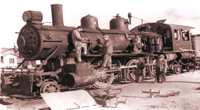

Last updated: 9 September, 2025
| Builder: | ALCO, Dickson |
| Build #: | 26264 |
| Date: | 1902 |
| Engine #: | 7 (13) |
| Railroad: | Sharp and Fellows (Sayre & Fisher Duluth, Virginia and Rainy Lake) |
| Website: | www.laparks.org/traveltown traveltown.org |
| Email: | Travel.Town@lacity.org |
| Location: | Griffith Park, Travel Town, 5200 Zoo Dr, Los Angeles, CA 90027 |
| GPS: | 34.153791, -118.309056 Parking. |
| Phone: | 323-662-5874 |
| Status: | Display |
| Notes: | Donated in 1955 by Sharp And Fellows Contracting Co. 1 |
Subject to change: | |
| Hours: | Monday thru Friday 1000 to 1700 (10AM to 5PM) Weekends & Holidays 1000 to 1700 (10AM to 5PM) Closed Thanksgiving and Christmas 2 (The Museum Gift Shop closes at 4:45PM) |
| Admission: | Donations only. There is no parking/admission fee to visit Travel Town! 2 |
Designing and building of steam locomotives was potentially as lucrative, and certainly as cut-throat, as financing railroads themselves. Many small firms were born and died throughout the 19th century; some built only a few locomotives, others enjoyed success for several decades and employed hundreds of men. The entire steam locomotive production industry remained centered in the East. Steadily making its way to the top since its 1831 beginning was the Baldwin Locomotive Works of Philadelphia. By the end of the 19th Century, many competing smaller builders found themselves unfavorably squeezed by the giant, including Brooks, Cooke, Dickson, Manchester, Pittsburgh, Rhode Island, Richmond, and Schenectady companies.
Each of these formerly independent companies became a production tentacle of the ALCO (ALCO) octopus. Baldwin and ALCO remained in head-to-head competition for nearly 50 years eventually, building diesel locomotives as well in the 1930s and 1940s. Both companies ¾ in this transition ¾ failed, leaving that field to General Electric and Electro-Motive Division of General Motors. In 1956, Baldwin ceased production; ALCO disappeared abruptly in 1969. This engine, the Sharp and Fellows #7, was originally built about 1902 with a 2-6-0 wheel arrangement for the Minnesota Land and Construction Company. In 1909, it was sold to C. H. Sharp Construction Company, who added a two-wheel trailing truck under the engine cab and then used the locomotive in the building of the Santa Fe Railway System through Kansas, Texas, Oklahoma, New Mexico, Arizona, and California. During the First World War, #7 served at Camp Kearney, San Diego, and served during World War II at an assortment of ordnance depots, including Defense Ordnance at Fort Wingate, New Mexico and the Navajo Ordnance Plant at Flagstaff, Arizona.
| Class: | |
| Gauge: | 4'-8½" |
| F.M.Whyte: | 2-6-2 |
| Drivers: | 56" |
| Gear Ratio: | |
| Tractive Effort: | |
| Weight: | 75 tons |
| Weight on Drivers: | |
| Length: | 61' 2" |
| Boiler: | |
| Cylinders: | 20"x26" |
| Top Speed: | |
| Horsepower: | |
| Fuel: | |
| Fuel Type: | |
| Water: | |
| Steam psi: |